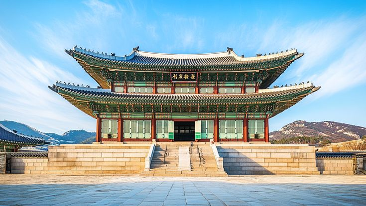

El mercado Dongdaemun nunca duerme: es un vibrante laberinto de luces, moda y energía. Entre puestos
callejeros, centros comerciales y diseñadores emergentes, el lugar late al ritmo de Seúl.
Palacio Gyeongbokgung

El Palacio Gyeongbokgung, conocido como “el palacio bendecido por el cielo”, es el más majestuoso de
Seúl y un símbolo del poder real de la dinastía Joseon.
Barrio
Insa-Dong
El barrio Insa-dong es el corazón cultural de Seúl, donde lo antiguo y lo moderno se entrelazan en
cada callejón. Entre casas de té tradicionales, galerías de arte y tiendas de antigüedades, se
esconde un espíritu bohemio que invita a perderse.